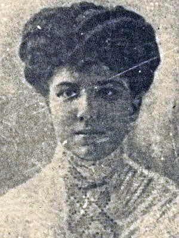

Vida de Rosalía de Castro
Infancia
Naceu na madrugada do 23 de febreiro de 1837 nunha casa localizada na marxe dereita do Camiño Novo (Santiago de Compostela), a antiga vía de entrada á cidade de Santiago de Compostela para todos aqueles viaxeiros procedentes de Pontevedra.
Filla natural do sacerdote José Martínez Viojo (1798-1871) capelán da igrexa de Iria e de María Teresa da Cruz Castro e Abadía (1804-1862), de familia fidalga, solteira de escasos recursos económicos, foi bautizada ás poucas horas do seu nacemento na Capela do Hospital Real polo presbítero José Vicente Varela e Montero, cos nomes de María Rosalía Rita e figurando como filla de pais descoñecidos para beneficio de ambos.
Posteriormente, cando Rosalía tiña 3 anos de vida,a nai da rapaza decideu finalmente asinar un documento donde recoñece a Rosalía como filla propia e pasan a vivir xuntas. Sábese que en torno ao ano 1850 a moza trasládase á cidade de Santiago de Compostela, onde viviu xunto á súa nai. É en Santiago de Compostela onde Rosalía recibiu a instrución considerada por aquel entón como a máis adecuada para unha nova (nocións básicas de debuxo e música), asistindo de forma habitual ás actividades culturais promovidas polo Liceo da Mocidade xunto con personalidades destacadas da mocidade intelectual compostelá como Manuel Murguía, Eduardo Pondal e Aurelio Aguirre.
Vida Adulta
En abril de 1856, Rosalía trasladouse a Madrid xunto coa familia do seu parente María Josefa Carmen García-Lugín e Castro. Dous anos despois, Rosalía de Castro e Manuel Murguía uníronse en santo matrimonio en Madrid e sete meses despois naceu a súa primeira filla, Alejandra, a primeira dos 7 fillos que tería o matrimonio. A pesar de que todos os fillos de Rosalía naceron en Galicia e foi aquí onde pasou os seus últimos anos, o certo é que por motivos das actividades profesionais de Murguía pasaron moito tempo viaxando por España. É en Madrid donde publica o seu primeiro poemario respaldada polo seu marido Manuel Murgía.
Últimos anos de vida
Os últimos anos da vida de Rosalía transcorreron na comarca de Padrón, lugar no que pasara a súa infancia, así como boa parte da súa mocidade. Rosalía morreu o 15 de xullo de 1885, por mor dun cancro de ovarios que levaba evolucionando tres anos na casa da Matanza rodeada da súa familia.As súas últimas palabras foron para a súa filla maior, Alejandra, pedíndolle que lle fixera un ramo de pensamiento, a súa flor favorita, e que abrise a fiestra para poder ver o mar, unha metáfora que ela empregaba nos seus poemas para referirse á morte.